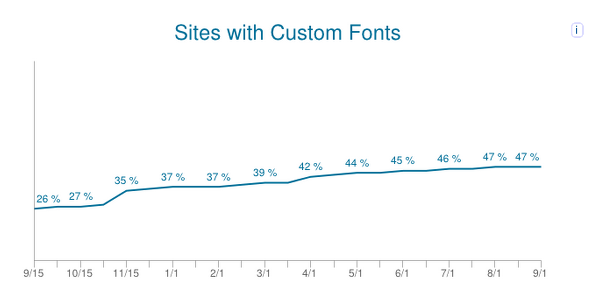

Fast Loading Web fonts
Outline
- Why Web fonts make the web better?
- What is a Web font?
- Stats
- WOFF 1.0
- WOFF 2.0
Why talk about Web fonts?
- Won a ticket to go to Velocity 2014 via the David Walsh Blog
- One of my favourite talks was Making Web Fonts Fast(er) by @igrigorik
What is a Web font?
- Glyph = vector shape
- Font = collection of glyphs
- Font variants (bold, italic, condensed, etc.)
- Font file size determined by
- Complexity of the glyphs
- Number of glyphs
Why Web fonts make the web better?
- Accessible
- Easier to read
- Copy + Paste
- SEO friendly
- Zoom in and out
- Beautiful
Most mobile devices ship with only one system font
Web fonts are here to stay!
Interesting Statistics
According to HTTP archive
- 35% of the Alexa's TOP 1000 web sites are using web fonts on their homepage
- 62% when we look beyond the homepage of these websites
Interesting Statistics

- This chart shows the percentage of sites that make at least one request for a custom font (Sep 2013-2014)
- Over 230% growth in one year
- Check out Google fonts usage real-time data
Web fonts in Browsers
- Impacts user experience
- IE renders immediately with fallback and re-renders when font is available
- Firefox blocks text rendering for up to 3s and uses fallback if timeout is reached
- Chrome M35+ recently added a 3 second timeout
- Older versions of Chrome and Safari block text rendering indefinitely
WOFF 1.0
- Web Open Font Format
- Supported by "all" browsers
WOFF 2.0
- Font compression format announced in April 2012 after a year or so of exploration
- Faster decompression speed and lower memory requirements
- Bleeding edge → limited support
Chrome 36 and Opera 23 (both stable) already support WOFF2 web fonts: http://t.co/RN1wVrv63B Convert your web fonts to improve performance.
— Mathias Bynens (@mathias) August 19, 2014Why use WOFF2?
- It offers a 30% average gain over WOFF 1.0 (measured using Google Fonts corpus)
- Gain was more impressive for Asian fonts where 50%+ improvements was noticed
What about TELUS?
- WOFF 2.0 offers a 22.9% average gain over WOFF 1.0
- Shave off 72 KB on initial page load
TELUS web fonts
| font-family | woff | woff2 | performance improvement |
|---|---|---|---|
| telusdings-regular | 26 KB | 21 KB | 19% |
| tultralightregular | 74 KB | 58 KB | 22% |
| tthinregular tultralightregular (bold) |
61 KB | 46 KB | 24.59% |
| tlightregular tthinregular (bold) |
58 KB | 44 KB | 24.14% |
| tromanregular tlightregular (bold) |
49 KB | 37 KB | 24.49% |
| tromanregular (bold) | 43 KB | 33 KB | 23.26% |
Are we using WOFF 2.0?
- .woff2 already on static.telus.com
- Not consumed by any of the sites yet
What's needed?
@font-face {
font-family: "Dings";
src: url(//path-to-file/dings.woff2) format('woff2'),
url(//path-to-file/dings.woff) format('woff'),
url(//path-to-file/dings.ttf) format(ttf'),
url(//path-to-file/dings.svg) format(svg'),
url(//path-to-file/dings.eot) format(eot')
}
@font-face {
font-family: "Dings";
src: url(//path-to-file/dings.woff2) format('woff2'),
url(//path-to-file/dings.woff) format('woff'),
url(//path-to-file/dings.ttf) format(ttf'),
url(//path-to-file/dings.svg) format(svg'),
url(//path-to-file/dings.eot) format(eot')
}
How to generate .woff2 files?
$ git clone https://code.google.com/p/font-compression-reference/
$ cd font-compression-reference/woff2
$ make clean all
$ ./woff2_compress telusdings.ttf
TL;DR
- Web fonts popularity is going through the roof
- Web fonts enhance the user experience but be selective when choosing fonts for a website
- Reduce number of fonts and fonts variants
- Optimize font delivery
- Serve relevant characters only using the latest compression formats available